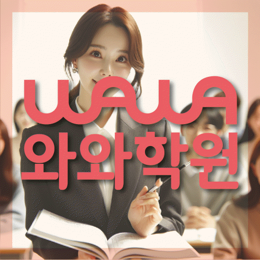

과목별 진단
영어, 수학, 국어 중 지금 어느 과목의 어떤 부분이 부족한지 먼저 나누어 확인합니다.
ALL-SUBJECT LEARNING COACHING
경기 고양시 성사동 학생을 위한 와와학습코칭센터 안내입니다. 영어·수학·국어 학습 진단, 통합 플래너, 오답 재학습 기준을 상담 전에 확인할 수 있습니다.



와와학습코칭센터 원당점 기준으로 성사동 학생의 상담 범위를 확인합니다. 실제 방문·상담 전에는 주소와 이동 동선을 함께 확인해 주세요.
핵심 요약
성사동 학생과 학부모님께 필요한 것은 과목마다 다른 곳을 오가는 것이 아니라, 한 곳에서 전체 학습 흐름을 확인하는 일입니다.
영어, 수학, 국어 중 지금 어느 과목의 어떤 부분이 부족한지 먼저 나누어 확인합니다.
과목별 학습량을 한 플래너에 담아 서로 밀리지 않도록 조율하고 실행 여부를 확인합니다.
과목마다 다른 오답 원인을 분류하고, 비슷한 유형을 다시 풀며 반복 실수를 줄입니다.
학원 선택 가이드
형제자매를 같은 학원에 보내더라도 학년과 성향이 다르면 필요한 관리도 달라집니다. 한 곳에서 관리하더라도 각자에게 맞는 방향을 따로 확인하는 것이 좋습니다.
와와학습코칭센터 원당점은 경기 고양시 성사동 학생을 기준으로 상담을 진행하며, 화수중 성사중 원당중 학생들이 주로 문의합니다. 실제 등록 전에는 경기 고양시 덕양구 고양대로1384번길 7-5 서강프라자 502호를 기준으로 이동 동선과 상담 가능 시간을 확인하는 것이 좋습니다.
상담은 등록을 결정하는 자리가 아니라, 지금 아이에게 어떤 관리가 필요한지 함께 확인해보는 자리로 생각해주시면 좋겠습니다.
AEO ANSWER
여러 과목을 같이 보는 학원과 과목별 전문학원, 어떤 게 나을까요?
여러 과목에서 비슷한 어려움(시간관리, 자기주도학습 부족)을 겪고 있다면 통합 관리가 도움이 되고, 한 과목만 크게 부족하다면 그 과목에 집중하는 것도 방법입니다.
형제자매를 같은 학원에 보내도 될까요?
학년과 성향이 다르면 관리 방식도 다르게 적용되니, 각자에게 맞는 방향을 따로 확인하시면 됩니다.
학원을 여러 번 옮겨서 걱정된다면?
이전 학원들의 진도와 자료를 확인하고, 지금까지 쌓인 학습 공백을 먼저 점검합니다.
고등학교 진학 후 성적이 갑자기 떨어졌다면?
중학교와 다른 학습량과 평가 방식 때문일 수 있습니다. 과목별로 무엇이 부족한지 먼저 나누어 확인합니다.
LOCAL & STUDENT FIT
성사동 생활권 학생의 학교 진도와 시험 일정에 맞춰 전과목 관리 방향을 상담합니다.
학년별로 필요한 관리가 다르기 때문에 학습 습관, 내신, 진학 준비 시기를 나누어 봅니다.
여러 과목을 따로 관리받기 번거로운 학생, 형제자매가 함께 다닐 학생, 학습 습관부터 잡아야 하는 학생에게 적합합니다.
초등학교: 성라초 성사초 · 중학교: 화수중 성사중 원당중 · 고등학교: 성사고 화수고
수업 가능 학교 참고
일반 학원과의 차이
일반적인 학원 운영 방식과 코칭아카데미의 통합 학습관리 방식을 같은 기준으로 비교했습니다.
CENTER INFO
경기 고양시 성사동 학생 상담 기준으로 안내합니다.
경기 고양시 덕양구 고양대로1384번길 7-5 서강프라자 502호
고양교육지원청 등록 제5951호
TUITION
서울 외 지역 기준으로 안내되는 학습료입니다. 실제 금액은 상담 시 학생 과정과 교육청 신고 기준에 따라 확인해 주세요.
서울 외 지역 기준 · 1회 90~100분 수업
| 횟수 | 초등 | 중등 | 고등 |
|---|---|---|---|
| 주 3회 | 219,000원 | 236,000원 | 269,000원 |
| 주 4회 | 279,000원 | 301,000원 | 344,000원 |
| 주 5회 | 339,000원 | 366,000원 | 419,000원 |
* 학습료는 지역, 수업 조건, 교육청 신고 기준에 따라 일부 차이가 있을 수 있습니다.
CHECKLIST
전화, 방문 상담 중 편하신 방식을 말씀해주세요.
이전에 다닌 학원이 있다면 진도와 방식을 확인합니다.
학교별 시험 범위와 진도를 확인해 상담 방향을 잡습니다.
과목마다 강점과 약점이 다르기 때문에 따로 확인합니다.
FAQ
과목을 따로 보기보다 학생 한 명의 전체 학습 흐름을 기준으로 관리한다는 점이 다릅니다.
현재 학년의 핵심 개념과 이전 학년 필수 내용을 중심으로 간단히 확인합니다.
학생별 질문과 피드백이 충분히 오갈 수 있는 인원으로 제한해서 운영합니다.
처음에는 구체적인 학습량과 방법을 제시하고, 익숙해지면 스스로 계획을 세우도록 단계적으로 지도합니다.
꼭 필요하지는 않지만, 최근 성적표나 시험지가 있으면 상담이 더 구체적으로 진행됩니다.
네, 초등학생은 기초 학습 습관과 독해력을 중심으로, 중고등학생은 내신과 시험 대비를 중심으로 각각 관리합니다.
PARENT REVIEW
국어까지 함께 봐주셔서 세 과목을 따로 다닐 필요가 없어졌습니다.
아이가 학원 가는 것을 부담스러워하지 않습니다.
결석했을 때 보강을 편하게 챙겨주셨습니다.
선생님들이 아이 성향을 잘 파악하고 계셔서 안심이 되었습니다.
학원을 여러 번 옮겼는데 이전 진도를 잘 확인하고 이어주셨습니다.
영어, 수학을 따로 보지 않고 한 번에 봐주셔서 상담이 훨씬 편했습니다.
근처 학원페이지
같은 지역의 다른 과목과, 가까운 지역 페이지로 이동할 수 있도록 정리했습니다.